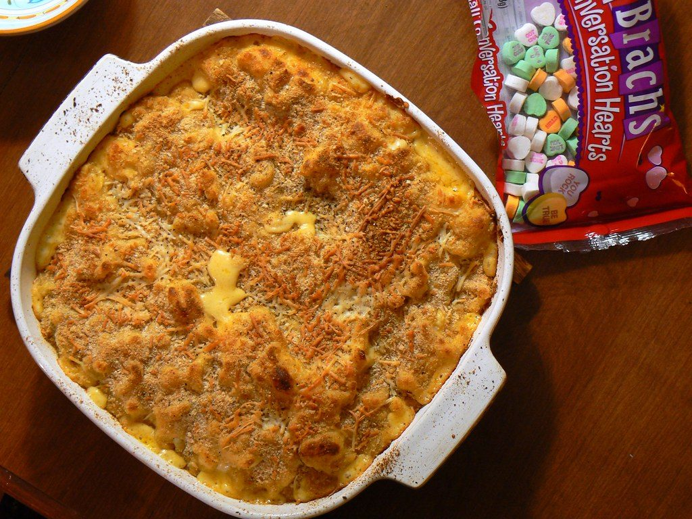
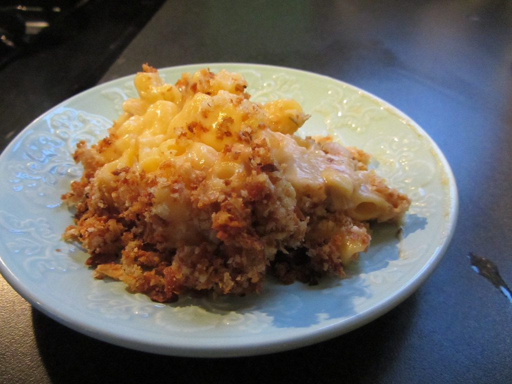
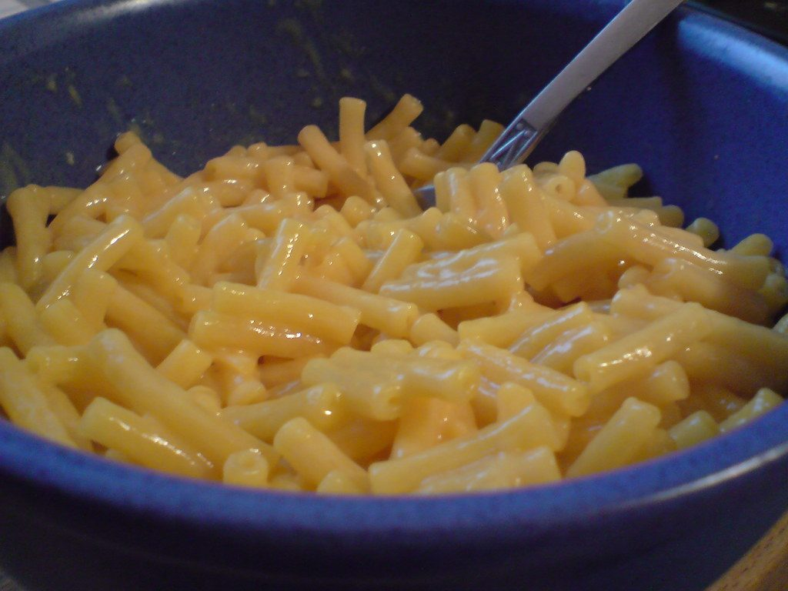
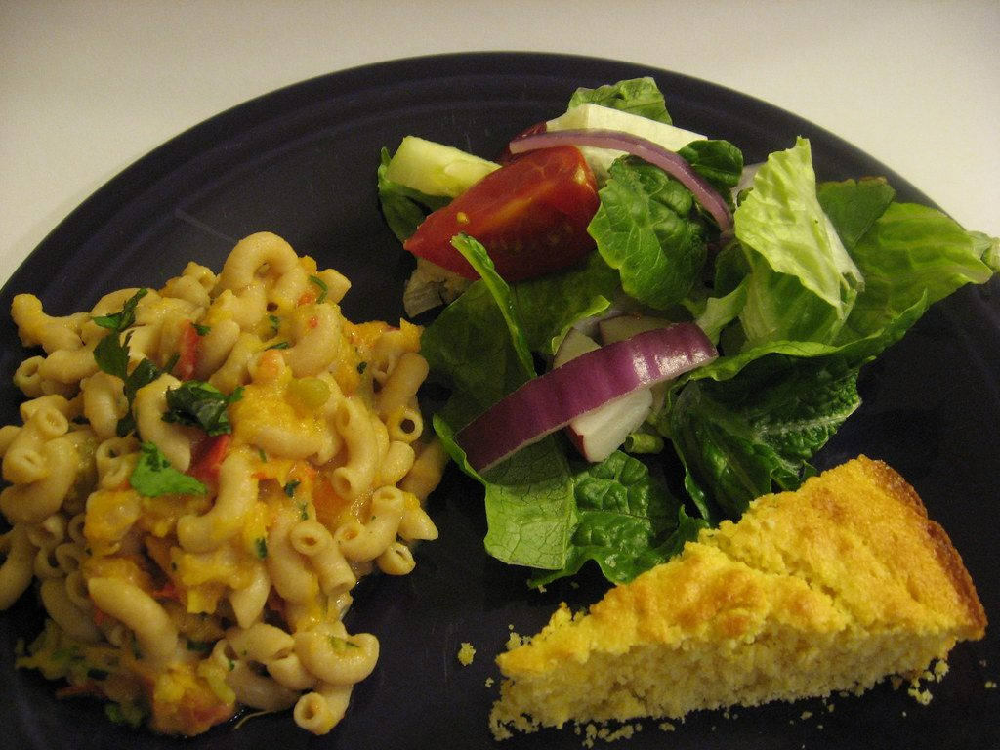
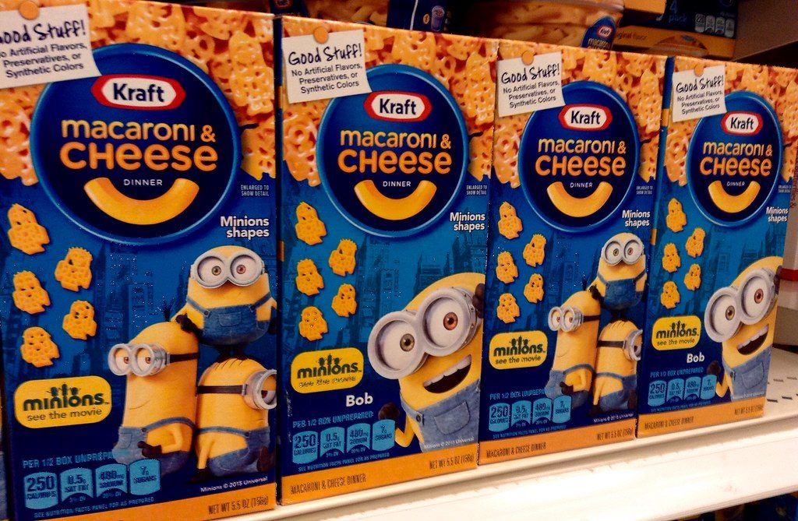
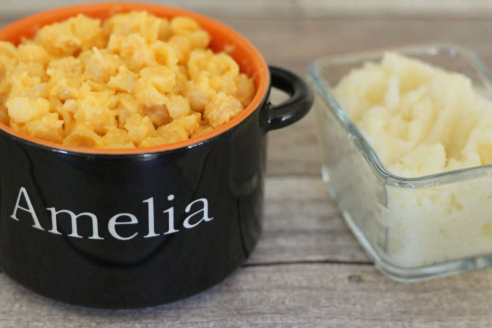
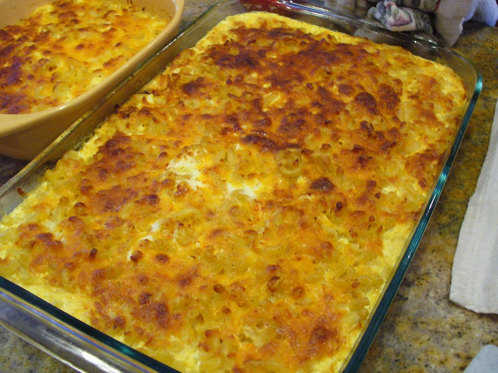

← Comfort Food
Baked Mac and Cheese
A real béchamel, four cheeses, and a crispy top that makes the pan go quiet at the table.
A real béchamel, four cheeses, and a crispy top that makes the pan go quiet at the table.
The mac and cheese that people dream about is built on a proper béchamel: butter, flour, milk cooked into a silken sauce, then real cheese melted into it off the heat. This is the Southern bake — custardy inside, crumb-crusted outside — not the stovetop version, and the difference is the texture that only a short oven ride gives you.
Two moves prevent the classic failures. Undercook the pasta by two minutes — it finishes in the oven, and pasta cooked to soft before baking turns to mush. And melt the cheese into the sauce off the heat, adding it in handfuls; boiling cheese breaks into graininess and greasiness. A panko-butter crust on top is the crunch that makes people stop talking mid-sentence.
serves 6 — tick items off as you shop; it saves as you go
Every tool this recipe leans on — click any tool for its full story. The whole catalog lives on the Tool Wall.
Salted water, macaroni two minutes under package time. Drain, toss with a teaspoon of oil so it doesn't clump while you make the sauce.
Melt butter, whisk in flour, cook 2 minutes to a blond paste — raw flour taste is real. Warm milk in gradually, whisking, with the bay leaf. Simmer 5 minutes until it coats the back of a spoon.
Kill the heat. Mustard powder, paprika, cayenne, a heavy hand of black pepper. Salt now, remembering the cheeses are coming with their own salt.
Remove the bay. Add cheese in three handfuls, whisking each into the sauce before the next. If the sauce steams too hard, it will split — patience, off-heat, silky.
Fold in the pasta, taste the sauce (it should be slightly over-seasoned — the pasta dilutes), pour into a buttered dish. Panko mixed with melted butter and a little parmesan scattered on top.
25-30 minutes, until bubbling at the edges and the panko is deep gold. Rest 10 minutes — the sauce thickens from lava to custard as it sits. This rest is the hardest instruction on the page.







Images are web-sourced via image search and self-hosted. Original sources:
CC-licensed images: Benimoto (BY); Jason Riedy (BY); kalleboo (BY); Qfamily (BY); JeepersMedia (BY); PersonalCreations.com (BY); ffg (BY).
https://live.staticflickr.com/2288/2215025518_3a9c358247_b.jpghttps://live.staticflickr.com/2378/2254947358_c64ea8acd1_b.jpghttps://live.staticflickr.com/3061/2383484064_6945cf76e3_b.jpghttps://live.staticflickr.com/3135/3073445539_3eb4ee49ea_b.jpghttps://live.staticflickr.com/7045/6968265835_6f7a47a3b5_b.jpghttps://live.staticflickr.com/7545/16224084011_636326150f_b.jpghttps://live.staticflickr.com/7674/17341353235_ec618de376_b.jpgVerified working videos — click a card to load the embed.


The dish at a glance — twelve field notes for the collectors.
Powered by GitHub Issues — the backup kitchen. One issue per recipe; your comment lands in the repo.
If this one works for you, the neighbors probably will too.

cheese-and-starch comfort, two nations, two temperatures

the cheese-lid club: golden tops with structural ambition

golden-topped bakes, spoon-tender insides